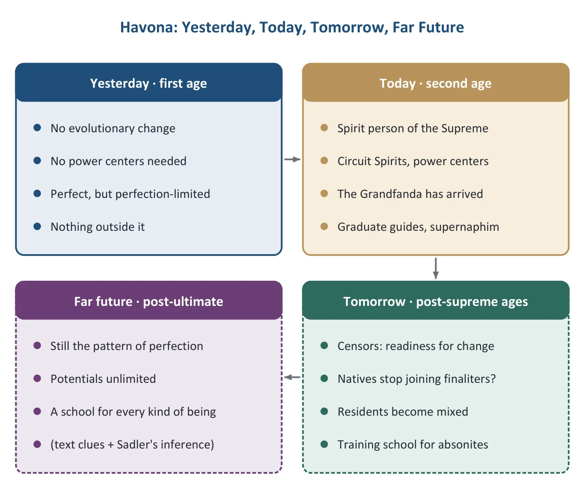

Les âges de l’univers
Original : Annexe IV, Les âges de l’univers (pp. 190–212)
DANS CE CHAPITRE
Là où l’Annexe III divisait le maitre univers selon l’espace, l’Annexe IV divise ce même maitre univers selon le temps. Le Livre d’Urantia parle d’un âge de Havona, d’un âge des superunivers et d’âges des univers extérieurs ; Sadler les met en correspondance avec les six niveaux d’espace et aboutit à six âges de l’univers. Il suit ensuite la Déité expérientielle, Dieu le Septuple, Havona, les superunivers, les univers locaux, les fils liés à la Trinité et les finalitaires à travers ces âges, en plaçant les affirmations du texte lui-même à côté de ses propres inférences.
1. Six âges de l’univers et six niveaux d’espace (orig., pp. 190–192)
Les grandes divisions du temps
Le Livre d’Urantia appelle le temps et l’espace un « mécanisme conjoint » du maitre univers [118:9.1]. Si les six niveaux d’espace sont les grandes divisions de l’espace, les âges de l’univers sont les grandes divisions du temps. Le texte les nomme dans cet ordre :
La chronicité majeure du maitre univers concerne les divers âges universels : les âges de Havona, des superunivers et des univers extérieurs.115:3.18
Sadler attribue un âge des univers extérieurs à chacun des quatre niveaux d’espace extérieur et compte ainsi six âges en tout. Le premier âge appartient au niveau d’espace de Havona, le deuxième au niveau d’espace des superunivers, et du troisième au sixième aux niveaux d’espace primaire, secondaire, tertiaire et quaternaire. Nous vivons maintenant dans le deuxième âge, l’âge des superunivers. Dans la mise en correspondance du temps et de l’espace qu’opère Sadler, l’aube de chaque nouvel âge signifie l’ouverture et le développement d’un nouveau niveau d’espace. Quelque chose suivra sans doute le sixième âge, mais, comme cela se situe au-delà de l’achèvement du maitre univers, il lui donne un nom particulier : l’âge post-ultime.

Le premier âge : pas de commencement, mais une fin
Sadler rappelle que l’Âge Zéro de l’Annexe I n’a jamais été un âge réel, mais seulement un point de départ pour la pensée, et il lit l’expression du texte « l’aurore de l’éternité » [31:9.3] comme le « commencement hypothétique » d’un âge de Havona qui, en fait, n’en a pas eu.
Le premier âge est unique à plusieurs égards. Comme l’univers central lui-même, il appartient à l’éternité passée et n’a pas de commencement dans le temps. Il est pré-suprême et pré-ultime, donc pré-expérientiel, et par conséquent entièrement existentiel. Sadler le considère aussi comme pré-créationnel et pré-évolutionnaire, au motif que les natifs de Havona, bien que descendants de la Trinité, sont décrits comme des citoyens « qui n’ont jamais été créés » [14:4.10].
Pourtant, le premier âge a bien une fin. Sadler suppose que sa limite s’est située aux environs de la trinitisation des Anciens des Jours, ou peut-être au moment où la Trinité a ordonné l’organisation des sept superunivers.
Ce que les âges post-Havona ont en commun
Les cinq âges qui suivent le premier, Sadler les réunit sous un même nom : les âges post-Havona. Chacun a un commencement et une fin dans le temps, et tous sont expérientiels. Le Livre d’Urantia situe précisément dans cette période l’actualisation de la Déité expérientielle :
Dieu le Suprême, Dieu l’Ultime et Dieu l’Absolu sont des personnalités de Déité en voie d’actualisation. Elles sont d’une époque postérieure à Havona dans les sphères de l’espace-temps et de l’espace-temps transcendé du maitre univers en expansion évolutionnaire.0:7.1
Sadler note une autre marque de ces âges : une procession qui se déplace dans deux directions à la fois. Dans l’âge présent, les Créateurs Suprêmes descendent tandis que les créatures évolutionnaires montent. Dans l’âge suivant, les finalitaires partiront vers l’espace extérieur, et des êtres natifs de l’espace extérieur monteront vers l’intérieur en passant par les superunivers rendus parfaits.
Le caractère unique du deuxième âge et l’élargissement de la destinée
L’âge présent est lui aussi unique, car c’est l’âge où l’Être Suprême évolue et croît. Quand cette croissance sera achevée, l’âge prendra fin, et la possibilité d’y participer ne se représentera pas.
À un moment donné de l’éternel futur, l’évolution de la Déité Suprême deviendra un fait accompli de l’histoire universelle, et l’occasion de participer à cette merveilleuse expérience aura disparu de la scène d’action cosmique.31:10.12
Sadler observe aussi que les âges successifs élargissent la destinée : chaque âge permet à celui qui le suit de dépasser les limites de croissance du précédent. Le texte présente Havona comme le modèle.
En soi et par soi, Havona est une création parfaite, mais limitée dans sa perfection.118:0.13
2. La Déité expérientielle d’âge en âge (orig., pp. 192–196)
Dans le premier âge, il n’y a pas de Déité expérientielle ; chaque âge ultérieur est marqué par sa croissance. Sadler rassemble les indices du texte sous quatre périodes, et le tableau ci-dessous les résume.
| Période | Être Suprême | Trinités expérientielles | Dieu l’Ultime |
|---|---|---|---|
| Âge présent | Présent dans Havona en tant que personnalité spirituelle ; agit dans le grand univers comme personnalité-pouvoir souveraine ; pas encore trouvable | La première et la deuxième sont toutes deux des réalités limitées | Présent dans Havona dans un sens subabsolu et superpersonnel |
| Fin de l’âge présent | Émerge et devient contactable ; remplace les Anciens des Jours comme souverain des superunivers | La première Trinité expérientielle se forme comme un fait | S’approche comme le défi de l’âge suivant |
| Âges post-suprêmes | Troisième fonction à l’échelle du maitre univers ; super-tout-puissant des univers extérieurs | La première Trinité expérientielle coordonne le maitre univers | Personnalisé en pouvoir comme souverain du maitre univers |
| Âge post-ultime | (Association Suprême-Ultime) | La Trinité Absolue se forme comme un fait | Conduisant à la révélation de Dieu l’Absolu ? |
À chaque âge, l’objet du grand défi change. Pour nous, le défi consiste maintenant à trouver Dieu le Suprême, mais, pour les finalitaires, Dieu l’Ultime se profile déjà comme le défi suivant. Le texte dit que Dieu l’Ultime préfigure son supercontrôle transcendantal pendant les stades ultérieurs d’un univers local ancré dans la lumière et la vie [56:7.5]. Quant à la troisième fonction de l’Être Suprême, les révélateurs eux-mêmes reconnaissent : « En réalité, aucun de nous n’en sait rien » [116:0.5]. Sadler, pour sa part, énumère trois conjectures et s’abstient de choisir entre elles.
3. Dieu le Septuple et l’avenir des Créateurs Suprêmes (orig., pp. 196–199)
Une fonction qui s’élargit
Les relations des Déités du Paradis avec l’univers ne sont pas modifiées par le développement expérientiel des univers. Sadler se tourne donc vers les Créateurs Suprêmes au sein de Dieu le Septuple — les Maitres Esprits, les Fils Créateurs et les Anciens des Jours — et se demande ce qui les attend. Son point de départ est ce passage :
La fonction de Dieu le Septuple date de l’organisation des sept superunivers et va probablement s’étendre avec l’évolution future des créations de l’espace extérieur.0:8.12
Le texte dit qu’à mesure que les créations du temps s’ancrent, Dieu le Suprême fonctionne plus pleinement tandis que l’activité des Créateurs Suprêmes se retire dans la même proportion. Partiront-ils alors vers l’espace extérieur ? Le texte laisse la question ouverte : « Nous ne le savons pas » [56:7.6].
Trois groupes, trois perspectives
Les Sept Maitres Esprits. Pris ensemble, les Maitres Esprits portent les attributs du Suprême, de l’Ultime et du Suprême-Ultime, et Sadler en infère qu’ils ont la capacité de fonctionner jusqu’à l’âge post-ultime. Le texte dit que les Anciens des Jours et les Maitres Esprits sont « probablement installés de manière éternelle comme administrateurs permanents dans le grand univers » [0:8.11], mais Sadler y voit une fixation du lieu de résidence plutôt que du champ d’activité. Il s’appuie sur l’affirmation selon laquelle les résidences administratives des Maitres Esprits sont les quartiers généraux paradisiaques des sept superunivers « et des segments d’espace extérieur qui leur sont reliés » [13:4.6].
Les Anciens des Jours. Parce que l’évolution du Suprême est encore incomplète, ils assurent actuellement le plein supercontrôle administratif [18:3.9]. Quand cet âge prendra fin, l’Être Suprême, le souverain expérientiel, prendra leur place, et ils deviendront ses vice-gérants.
ils n’ont pas gagné par expérience ce droit de gouverner ; ils sont donc destinés à être remplacés un jour par l’Être Suprême, souverain expérientiel18:3.8
Les Fils d’Univers et les Esprits d’Univers. Le texte décrit ainsi la relation du Fils Éternel et de l’Esprit Infini :
Dans toutes les créations subséquentes, l’Esprit entretient les mêmes relations avec le Fils que le Fils avec le Père dans la première création centrale.8:3.3
Sadler estime que cette relation est mise en œuvre dans la pratique moins par le Fils et l’Esprit du Paradis que par le Fils Créateur et l’Esprit Créatif de chaque univers local. Le texte rapporte l’opinion selon laquelle les âges futurs pourraient amener entre les deux une union plus étroite, d’où pourrait s’extérioriser un nouveau créateur associé de nature ultime [56:7.7], et il conjecture que les Fils Créateurs sont destinés à fonctionner dans les univers extérieurs. L’idée que les Micaëls Maitres pourraient un jour transférer leur sphère de statut de Sonarington à Vicegerington est une supposition personnelle de Sadler et n’a aucun fondement dans le texte.
4. Havona : hier, aujourd’hui, demain (orig., pp. 199–202)
Sadler considère l’univers central sous quatre angles : hier, aujourd’hui, demain et l’avenir lointain.

Hier. Dans le premier âge, Havona n’a subi aucun changement évolutionnaire [106:0.18], et il n’avait pas besoin de centres de pouvoir. C’était une création parfaite, quoique bornée par sa propre perfection.
Aujourd’hui. Le Havona actuel n’est plus le Havona d’hier. La personnalité spirituelle du Suprême est apparue ; l’organisation des superunivers a apporté des changements, et l’arrivée de Grandfanda en a apporté d’autres. Les Esprits des Circuits sont devenus visibles dans leur travail, les Guides de Diplômés et les supernaphins secondaires sont apparus, et des citoyens du Paradis ont commencé leur pèlerinage vers l’extérieur à travers Havona. Le texte lui-même reconnait la différence :
Nous savons que Havona du précédent âge de l’univers était quelque peu différent de Havona de l’âge présent.19:6.8
Demain. Les besoins de demain se manifestent déjà dans le Havona d’aujourd’hui. On pense que les Censeurs Universels stationnés sur chacun du milliard de mondes y sont placés en prévision des âges futurs, où la population de Havona changera [19:4.2]. Les natifs de Havona pourraient un jour cesser d’entrer dans le Corps de la Finalité, et les résidents de Havona pourraient devenir mélangés [19:6.4]. Sadler en infère que, dans les âges post-suprêmes, Havona deviendra un univers éducatif pour des êtres absonites.
Havona est à même de servir d’univers éducatif à des êtres absonites.14:6.41
L’avenir lointain. Sadler conclut que, même dans l’âge post-ultime, une fois le maitre univers achevé, Havona restera le modèle de la perfection divine. Le texte exprime de même l’opinion que « les potentiels de l’éternel Havona sont vraiment illimités » [14:6.41].
5. Les âges des superunivers et des univers locaux (orig., pp. 202–208)
Du premier âge au deuxième
Sadler reconstitue en quatre étapes le passage du premier âge au deuxième. Le texte ne donne aucune chronologie ; il tisse des indices épars en un ordre plausible.
- Le premier âge non qualifié. La Source-Centre Troisième devient éternelle en même temps que Havona, et les natifs de Havona n’ont pas d’origine.
- La fin du premier âge. La personnalisation de l’Esprit Infini clôt le cycle existentiel de la personnalisation de la Déité ; la personnalisation suivante, celle des Sept Maitres Esprits, était subabsolue. Sadler voit dans l’apparition d’êtres expérientiels le signe que le premier âge touche à sa fin.
- L’ère proche de l’éternité, l’« aurore des temps ». Les Messagers Solitaires, les directeurs de pouvoir et les centres de pouvoir, ainsi que les Esprits Réflectifs, apparaissent à peu près à cette époque. Sadler comprend que les deux expressions désignent une seule et même période.
- Le commencement de l’histoire des superunivers. La première inscription dans les annales du Paradis est la trinitisation des Anciens des Jours ; tout ce qui la précède appartient à la préhistoire.
Après la lumière et la vie
Quand les superunivers s’ancreront dans la lumière et la vie, l’Être Suprême deviendra le souverain expérientiel des sept superunivers. Le texte exprime la croyance que les frontières entre les sept superunivers s’estomperont et que le grand univers en viendra à fonctionner comme un tout rendu parfait [117:7.15]. Sadler y voit une version cosmique de ce qui se passe sur une seule planète, où les races évolutionnaires développent des cultures distinctes, puis se mêlent à l’âge adamique. Les Superviseurs Non Qualifiés du Suprême deviennent le haut corps administratif au siège des superunivers [55:12.3], et l’œuvre des Créateurs Suprêmes diminue.
La lumière et la vie ne sont pas encore la fin. Le texte n’appelle l’état ancré que la limite de croissance « pour le présent âge de l’univers » et dit que l’âge suivant dégagera les superunivers de cette limitation [106:0.18]. Dans les univers locaux aussi, de nouvelles relations se développent entre les Fils Créateurs, les Esprits Créatifs, les Fils Instructeurs, les Étoiles du Soir et les finalitaires [55:10.9]. Sadler en infère qu’ils serviront tous un jour ensemble dans l’espace extérieur.
Sadler pose aussi une question simple mais pertinente. Les ascendeurs venus de mondes qui ont dépassé le troisième stade de lumière et de vie reçoivent une affectation temporaire sur une planète qui en est encore aux premiers stades de l’évolution [55:3.11]. Que se passera-t-il donc quand il ne restera plus de telles planètes ? Le texte ne donne pas de réponse, mais la question rappelle que les univers locaux, eux aussi, doivent entrer dans une phase nouvelle à l’âge suivant.
6. Les fils trinitisés et les finalitaires (orig., pp. 208–212)
Des êtres qui appartiennent à d’autres âges
Certains des fils liés à la Trinité vivent dans l’âge présent tout en ayant le statut d’un autre âge.
- Les fils embrassés par la Trinité. Les Puissants Messagers ont un statut qui est « celui du précédent âge de l’univers » et ne participent pas à la croissance de l’âge présent [117:2.4].
- Les fils trinitisés par des créatures. Ils sont nés et vivent maintenant, mais ils sont tenus en réserve pour l’âge à venir.
ces fils trinitisés par des créatures, tout en se trouvant dans le présent âge de l’univers, appartiennent en réalité au prochain âge de l’univers —l’âge qui suivra le parachèvement de la croissance du Suprême.117:2.3
- Les fils de la destinée trinitisés. Ils incorporent des concepts qui transcendent les limites créatives du présent âge de l’univers, et tous sont tenus en réserve sur Vicegerington [22:7.14].
Autrement dit, au sein d’un même âge, des êtres de plusieurs âges vivent côte à côte.
Les trois âges du finalitaire
Le deuxième âge. En entrant dans le Corps de la Finalité, l’ascendeur passe par l’expérience appelée transcendance finalitaire, s’allie d’une manière nouvelle au circuit de gravité spirituelle du Fils Éternel et devient candidat à la reconnaissance comme personnalité de Dieu le Suprême [117:5.3]. Sadler soupçonne un lien entre cet évènement et l’affirmation selon laquelle, au sixième stade d’existence spirituelle, un certain facteur de liaison du mental passe dans la dotation expérientielle du Suprême [107:5.6].
Les âges post-suprêmes. La destinée des finalitaires se trouve dans l’espace extérieur. Le texte exprime la croyance que les mortels fusionnés avec l’Ajusteur, avec leurs associés finalitaires, sont destinés à participer à l’administration du premier niveau d’espace extérieur [112:7.17]. Les êtres natifs des univers extérieurs ne participeront pas à la croissance du Suprême, et les finalitaires combleront ce manque. Lorsqu’ils atteindront le septième stade d’existence spirituelle, leur mental binaire sera uni au mental du Suprême et deviendra ainsi trin.
L’âge post-ultime. Ici, Sadler se tourne vers la septième dimension de la personnalité mortelle.
Cette dimension suprême est un absolu associable et, bien que n’étant pas infinie, elle possède un potentiel dimensionnel permettant une pénétration subinfinie de l’absolu.112:1.9
Qu’on y ajoute la « phase d’absoluité potentielle qualifiée » conférée par la fusion avec l’Ajusteur [112:7.1], et la conclusion de Sadler est claire : rien n’arrêtera la croissance des finalitaires, même après l’achèvement du maitre univers.
Sadler et le texte : références corrigées
L’Annexe IV contient plusieurs références erronées. Le passage affirmant que la fonction de Dieu le Septuple date de l’organisation des sept superunivers est 0:8.12 (imprimé dans l’original 0:10.12 et 0:13.12). Le statut des Puissants Messagers est donné en 117:2.4 et celui des fils trinitisés par des créatures en 117:2.3 (imprimés 17:2.4 et 172:3.14). Le passage sur la succession des âges est 115:3.18 (imprimé 15:3.18), et les Secrets de Suprématie Trinitisés figurent en 18:1.1 (imprimé 8:1.1). Pour les fils de la destinée trinitisés, ce livre cite 22:7.14, où est décrite leur relation avec les Architectes du Maitre Univers.
Points clés
- Sadler divise le temps du maitre univers en six âges de l’univers et met chacun en correspondance avec l’un des six niveaux d’espace. Nous vivons dans le deuxième, l’âge des superunivers.
- Le premier âge, l’âge de Havona, n’a pas de commencement mais a une fin, et il est entièrement existentiel. Les cinq autres, les âges post-Havona, sont tous expérientiels.
- Le deuxième âge est le seul où l’Être Suprême évolue ; une fois qu’il aura pris fin, l’occasion de participer à cette croissance ne reviendra pas.
- Les âges successifs élargissent la destinée. Havona passe d’une perfection statique à un univers changeant, puis s’oriente vers un univers éducatif pour des êtres absonites, tandis que la lumière et la vie ne sont que la limite de croissance de l’âge présent.
- Les fils embrassés par la Trinité, les fils trinitisés par des créatures et les fils de la destinée trinitisés vivent tous maintenant, mais chacun a le statut d’un âge différent.
- Les finalitaires sont destinés à révéler le Suprême dans l’espace extérieur, et Sadler infère que leur croissance se poursuit jusque dans l’âge post-ultime.